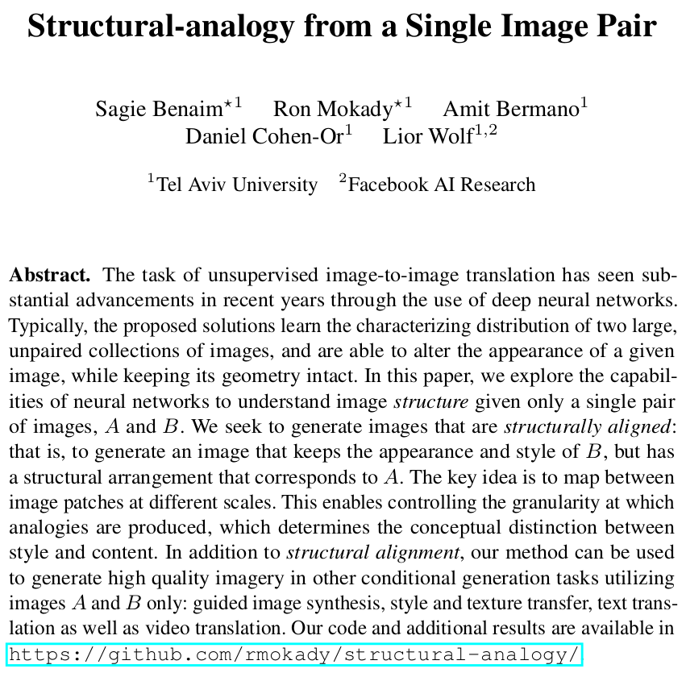
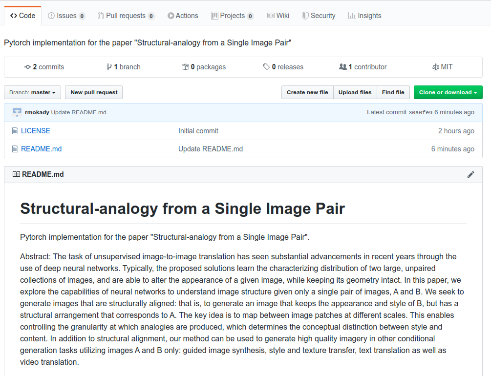

Structural-analogy from a Single Image Pair
| Sagie Benaim* | Ron Mokady* | Amit Bermano | Daniel Cohen-Or | Lior Wolf |
Our method takes two images as input (left and right), and generates images that consist of features from one image, spatially structured analogically to the other. |
Abstract
The task of unsupervised image-to-image translation has seen substantial advancements in recent years through the use of deep neural networks. Typically, the proposed solutions learn the characterizing distribution of two large, unpaired collections of images, and are able to alter the appearance of a given image, while keeping its geometry intact. In this paper, we explore the capabilities of neural networks to understand image structure given only a single pair of images, A and B. We seek to generate images that are structurally aligned : that is, to generate an image that keeps the appearance and style of B, but has a structural arrangement that corresponds to A. The key idea is to map between image patches at different scales. This enables controlling the granularity at which analogies are produced, which determines the conceptual distinction between style and content. In addition to structural alignment, our method can be used to generate high quality imagery in other conditional generation tasks utilizing images A and B only: guided image synthesis, style and texture transfer, text translation as well as video translation.
Paper
|  |
|
Code:
|  | [Link] |
Applications
| As detailed in the paper, our method can be used to generate structurally aligned output as well as in different applications. Here are a few examples, see paper for additional results. |
Video Translation
| As detailed in of the paper, we provide video translation results here. In the following, the image in the top right is the target image, the video on the bottom left is the source video and the video on the bottom right is the translated video. |

 |
Last updated: April 2020